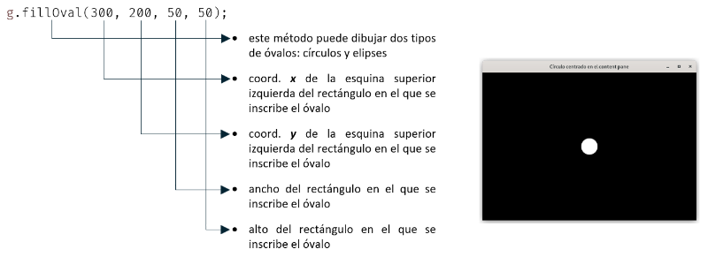

SdA Propuesta para el alumnado
Práctica Guiada
El objetivo de esta práctica es desarrollar una aplicación que sirva como base para el desarrollo de videojuegos con Java Swing y Java 2D.
La aplicación va a consistir en la animación de una bola que se desplaza a velocidad constante sobre una superficie rectangular, rebotando cuando choca con los bordes. Para completar su desarrollo vamos a crear tres clases:
- Clase
Main: contiene el punto de entrada a la aplicación, desde el que se lanza el proceso que llevará a cabo la creación y visualización de la ventana principal y el inicio de la animación. - Clase
Surface: extenderá a la claseJComponentpara crear la superficie sobre la que se desplazará la bola y que se añadirá a la ventana principal sustituyendo al panel de contenido. En esta clase también se implementará la animación con una técnica denominada rendering activo provista por el API de Java Swing y Java 2D. - Clase
Ball: para crear la bola que se moverá por la superficie.
Antes de comenzar con el desarrollo de la aplicación, vamos a ver una breve introducción a la clase Graphics2D del API de Java 2D. Esta clase representa el contexto gráfico de componentes de Swing e imágenes bitmap almacenadas en la memoria, y encapsula la información y funcionalidad necesaria para realizar sobre ellos todas las operaciones de renderizado soportadas por Java 2D.
El contexto gráfico consiste en una imagen rectangular formada por un conjunto de píxeles que se localizan mediante un sistema de coordenadas cartesianas con el eje y invertido y el origen de coordenadas situado en la esquina superior izquierda:
La clase Graphics2D proporciona primitivas de dibujo para dibujar una gran variedad de formas geométricas. Por ejemplo, suponiendo que g es una variable que referencia al objeto Graphics2D que representa el contexto gráfico del content pane de un JFrame, cuyo tamaño es de 650x450 píxeles, la sentencia siguiente dibujará un círculo con un diámetro de 50 píxeles centrado en dicho panel:

Ahora que conocemos algunos detalles básicos acerca del API de Java 2D, vamos a comenzar el desarrollo de la aplicación creando un repositorio de Git:
- Crea un repositorio en GitHub que contenga los ficheros
README.mdy.gitignore. - Clona este repositorio desde Eclipse y crea un proyecto en él.
- Crea en este proyecto el paquete
java.fp.dam.java2dy dentro de él las clases que se describen a continuación.
Obra publicada con Licencia Creative Commons Reconocimiento Compartir igual 4.0